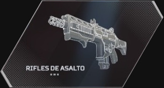
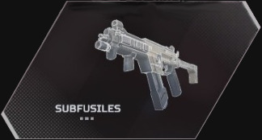
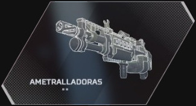
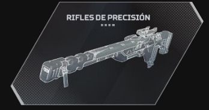
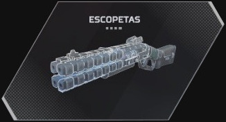
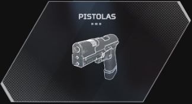

Armas de distancia corta-media, con un alto consumo de munición

Armas de distancia corta, con un consumo muy alto de munición

Armas de distancia media, con un consumo muy alto de munición

Armas de largo alcance, con un consumo muy bajo de munición y mucha precisión

Armas de corta distancia con un consumo bajo de munición

Armas de distancia corta media que consumen poca munición